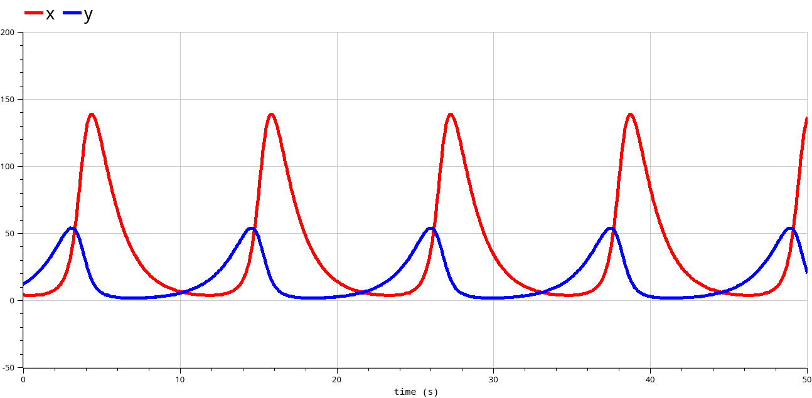
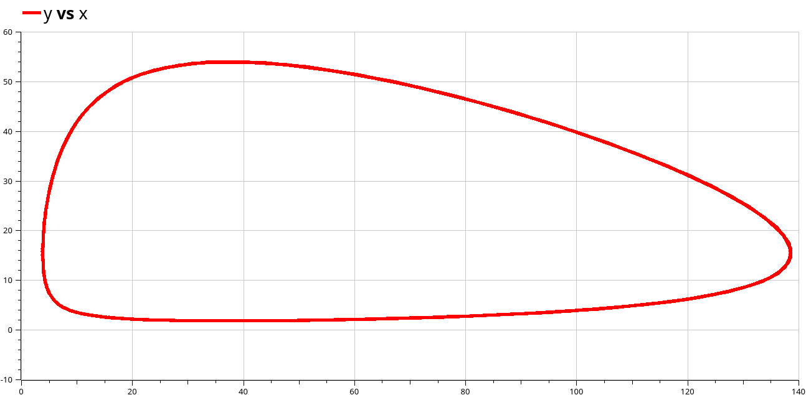
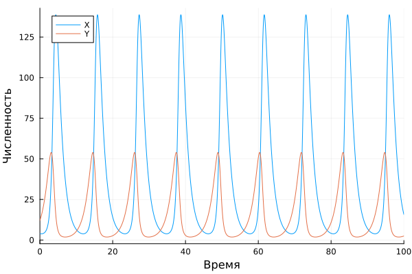
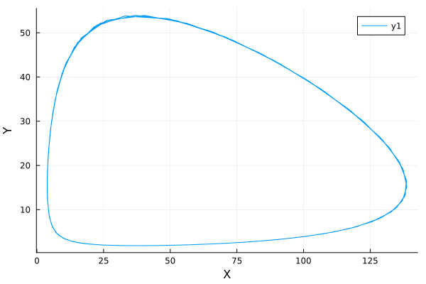

Модель хищник-жертва
Стариков Д. А.
Российский университет дружбы народов, Москва, Россия
19 апреля 2025
Реализовать модель хищник-жертва в OpenModelica и Julia, построить графики зависимости x и y от времени, график зависимости x от y.
Вариант 50
Для модели «хищник-жертва»:
$$ \begin{cases} \dfrac{dx}{dt} = -0.71x(t)+0.046x(t)y(t),\\ \dfrac{dy}{dt} = 0.64y(t)-0.017x(t)y(t). \end{cases}\,. $$
Постройте график зависимости численности хищников от численности жертв, а также графики изменения численности хищников и численности жертв при следующих начальных условиях: x0 = 4, y0 = 12. Найдите стационарное состояние системы.
model lab05 // Lotka-Volterra
parameter Real a=-0.71;
parameter Real b=0.046;
parameter Real c=0.64;
parameter Real d=-0.017;
parameter Real x0=4;
parameter Real y0=12;
Real x(start=x0);
Real y(start=y0);
equation
der(x) = a*x+b*x*y;
der(y) = c*y+d*x*y;
annotation(experiment(StartTime = 0, StopTime = 10, Interval = 0.002));
end lab05;

Также найдено стационарное состояние системы по формуле $x_s=\dfrac{c}{d}=-37.6470, y_s=\dfrac{a}{b}=-15.4347$
using OrdinaryDiffEq, Plots
function model(u, p, t)
x, y = u
a, b, c, d = p
dx = a*x + b*x*y
dy = c*y + d*x*y
return [dx, dy]
end
u0 = [4,12]
p = [-0.71, 0.046, 0.64, -0.017]
t = (0,100)
prob = ODEProblem(model, u0, t, p)
sol = solve(prob, reltol = 1e-12)
plot(sol, label=["X" "Y"], xaxis="Время", yaxis="Численность")
plot(map(first, sol.u), map(last, sol.u), xaxis="X", yaxis="Y")

OpenModelica и
Julia.